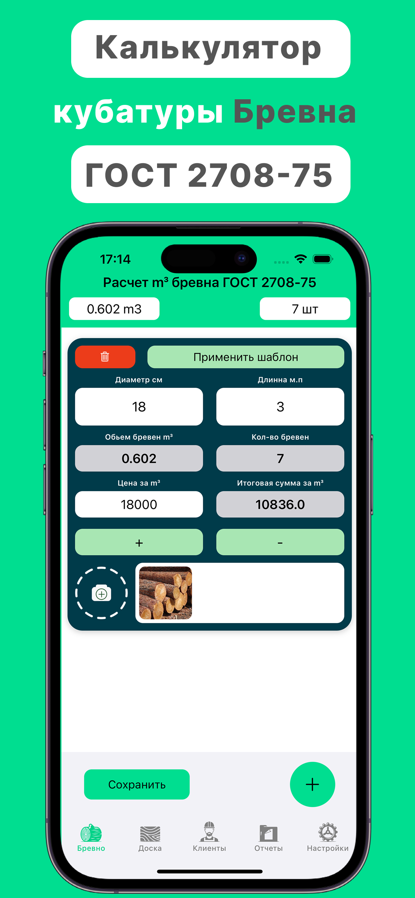
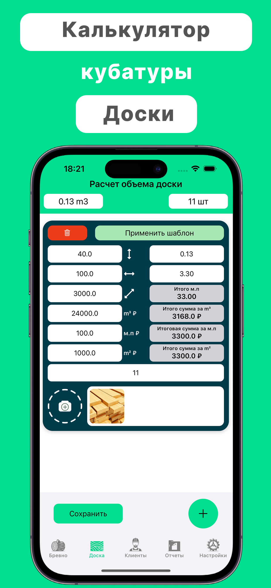
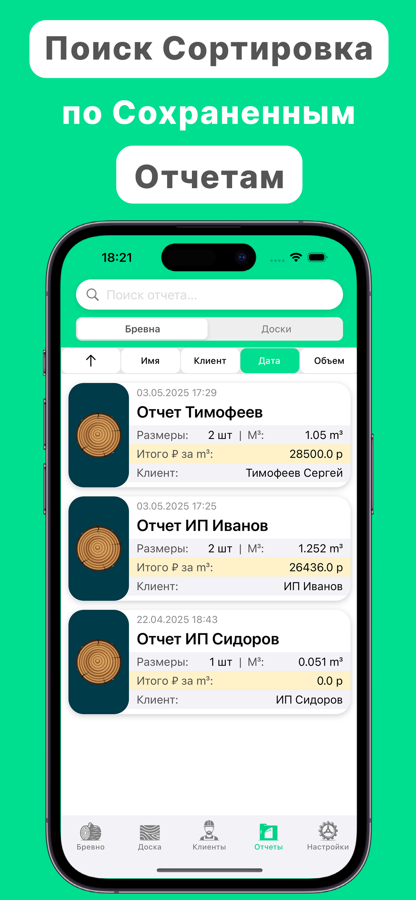

Built for On-Site Timber Scaling & Auditing



Speed Up On-Site Lumber Tallying
Select Log Length
Pick the standardized length bracket according to standard GOST specs.
Tap Top Diameters
Enter quantity counts for each end diameter with rapid entry keys.
Get Total Volume
Review calculated total cubic meters ($\text{m}^3$) instantly without manual books lookup.
Zero Approximations. Absolute Compliance.
Official GOST Matrices
The code matches legal state datasets flawlessly, preventing pricing discrepancies or shipment inventory audit rejections entirely.
Batch Tally Logs
Count hundreds of round wood items sequentially. The software aggregates total pieces and sum cubage dynamically as you count.
Instant Data Share
Export calculated timber batch tallies via structured spreadsheets or clean text reports directly to your commercial clients.
Engineered for Deep Remote Forestry Work
Lumber extraction yards rarely enjoy cell signals. Cubage Calculator requires no network data, login profiles, or advertising trackers.
Endorsed by Sawmill Operatives
"Replaced our battered paper reference handbooks completely. Tapping log counts right at the cargo truck is incredibly fast and foolproof."
"The numbers exactly align with state trading inspection protocols. Exporting reports to buyers saves us hours every afternoon."
Frequently Asked Questions
Does this calculator use mathematical cylinder formulas?
No. It strictly utilizes the official look-up arrays defined by GOST 2708-75 legislation for round timber, ensuring full compliance with state trade audits.
Can I estimate the volume of wood batches with custom lengths?
The system encompasses the complete legal length distribution array, covering standard small and heavy timber profiles explicitly.
Where are my shared spreadsheets generated?
Data assemblies are compiled purely in memory and transferred directly into native iOS sharing protocols without remote hosting involvement.
Eliminate Tedious Lumber Book Reference Tasks
Download Cubage Calculator GOST 2708-75 for iOS and optimize your log tally audits.